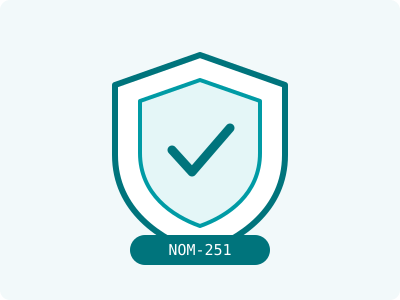

GUÍA · FORMATOS
GUÍA · FORMATOS
Ventajas, limitaciones y 3 preguntas para decidir el formato correcto de tu producto.
Pros, limits and 3 questions to choose your product's right format.
Leer guía →Read guide →
 GUÍA · LANZAMIENTO
GUÍA · LANZAMIENTO
Dosis simbólicas, maquilador por precio, etiqueta tardía… evítalos antes de tu primer lote.
Token doses, price-only manufacturers, late labels… avoid them before your first batch.
Leer guía →Read guide →
 GUÍA · ETIQUETADO
GUÍA · ETIQUETADO
Denominación, información obligatoria, claims permitidos, lote y caducidad — punto por punto.
Denomination, mandatory info, allowed claims, batch and expiry — point by point.
Leer guía →Read guide →
GUÍA · COSTOS
Los 5 factores que definen el precio de tu producto — y cómo obtener una cotización seria en días.
The 5 factors that define your product's price — and how to get a serious quote in days.
Leer guía →Read guide →
 GUÍA · PRODUCCIÓN
GUÍA · PRODUCCIÓN
Por qué existen los mínimos, tiempos reales por etapa y 3 consejos para tu primer lote.
Why minimums exist, real stage-by-stage timelines and 3 tips for your first batch.
Leer guía →Read guide →
 GUÍA · MARCA PROPIA
GUÍA · MARCA PROPIA
Del nicho al anaquel sin invertir en una planta: el camino completo, paso a paso.
From niche to shelf without building a factory: the full path, step by step.
Leer guía →Read guide →

GUÍA · REGULATORIO
La norma de higiene que separa a un fabricante profesional de un riesgo para tu marca.
The hygiene standard that separates a professional manufacturer from a risk to your brand.
Leer guía →Read guide →